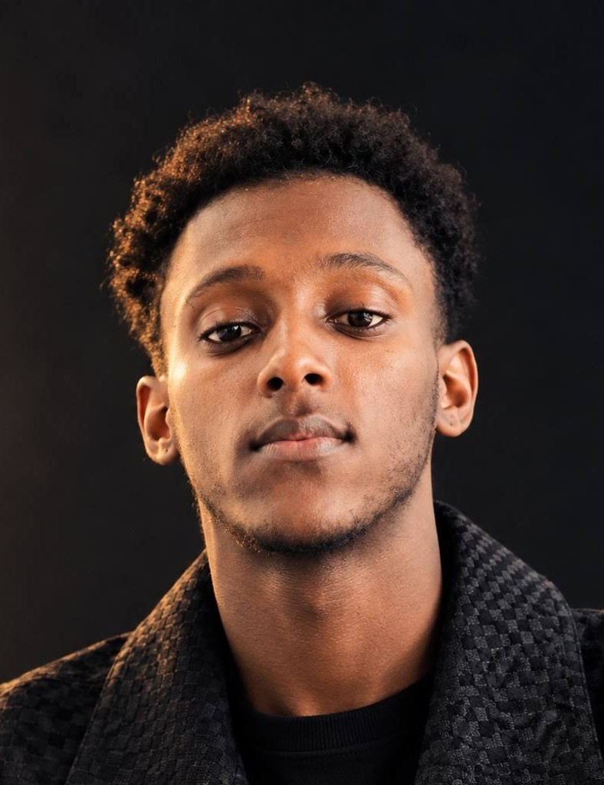
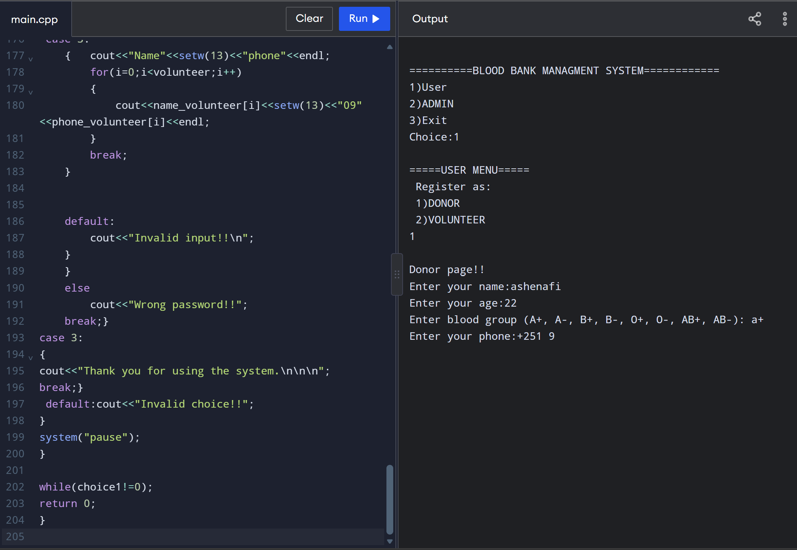
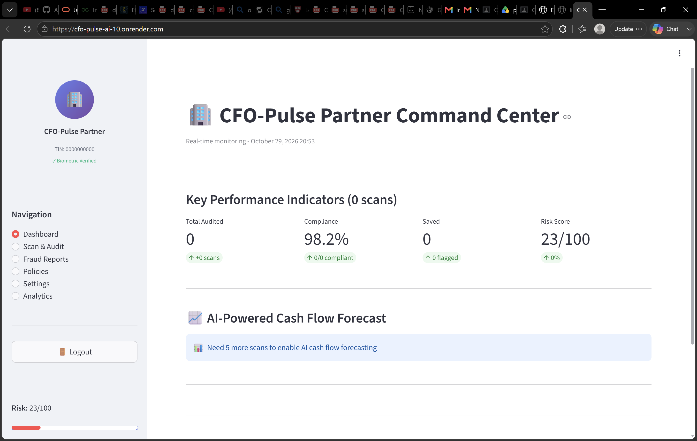
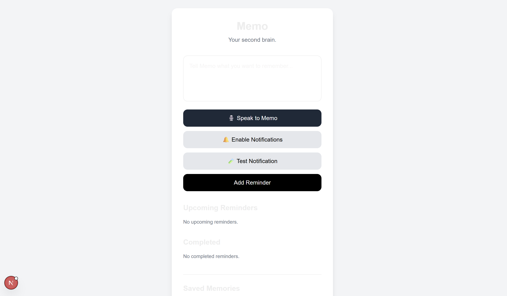

Software Engineering student and aspiring web developer.
About | Skills | Projects | Education | Contact | All Projects
I am a 3rd-year Software Engineering student with a strong passion for technology, innovation, and problem-solving. I enjoy transforming ideas into practical solutions through code and continuously exploring new technologies that can make a meaningful impact. Throughout my learning journey, I have developed a growing interest in software development and have worked on several projects that have helped me strengthen my technical skills and gain practical experience. My primary interests lie in Artificial Intelligence and Machine Learning, where I am fascinated by how intelligent systems can analyze data, learn from patterns, and solve real-world problems. I am certified in AI and Machine Learning, and I am continuously expanding my knowledge in this field. I also hold a Cisco Networking certification, which has strengthened my understanding of computer networks and the infrastructure that connects modern systems. Beyond AI and networking, I am passionate about web development and mobile application development. I enjoy designing and building applications that are functional, user-friendly, and capable of addressing real needs. I believe that becoming a great software engineer requires more than writing code—it requires curiosity, creativity, consistency, and a willingness to keep learning. I am always eager to take on new challenges, collaborate with other developers, and explore opportunities to turn innovative ideas into impactful projects. My long-term goal is to become a skilled software engineer and AI innovator who builds meaningful technology that creates value for people and businesses.
"The only way to do great work is to love what you do." - Steve Jobs
My teacher always tells me that practice makes perfect
, So that is
why I always practice.
Any fool can write code that a computer can understand. Good
programmers write code that humans can understand.
Book I am reading: Clean Code by Robert C. Martin

A web application for managing blood inventory and donor information.

A conversational AI assistant for financial professionals. It helps small and medium enterprises with their financial queries.

An application that helps users to set notifications and reminders.
The first program I ever wrote was a C++ program that printed a message. Later, I wrote this loop:
for (int i = 0; i < 10; i++) {
cout << "Hello world" << endl;
}Addis Ababa Science and Technology University, 2023 – present
| Year | Semester | Course | Credit Hours | Grade |
|---|---|---|---|---|
| Year 1 | Semester I | Fundamentals of Programming I | 3 | A |
| Applied Mathematics I | 4 | A | ||
| Semester II | Fundamentals of Programming II | 3 | A | |
| Discrete Mathematics | 3 | B | ||
| Year 2 | Semester I | Data Structures & Algorithms | 4 | A- |
| Internet Programming I | 3 | A | ||
| Total credit hours | 20 | |||
Address:
Addis Ababa,
Ethiopia
Email: aash7t@gmail.com
Phone: +251 996 175 040
GitHub: github.com/Aash77-b
Download my CV (PDF)